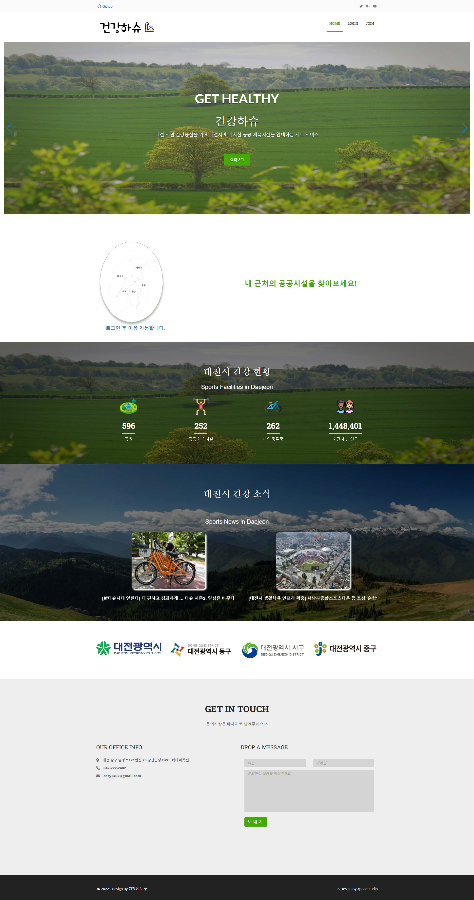

건강하슈
건강하슈는 대전시민을 대상으로 사용자 주변의 공공체육시설을 확인하고 이용함으로써 건강해졌으면 좋겠다는 의미에서 만든 프로젝트 입니다.
프로젝트 기간은 6월 20일 ~ 7월 11일 (22일간)이며, 팀은 3명으로 구성되어 있습니다.
저는 조의 조장으로써 팀의 역할을 분배하고 서비스 전반적인 기능을 조직적으로 구현하기 위해 노력했습니다.
프로젝트는 크게 두 가지 기능으로 나눠집니다. 첫 번째는 공공체육시설을 보여주는 지도 서비스이고, 두 번째는 지도 데이터와 사용자 데이터를 관리하는 관리자 기능입니다.
깃허브에서 소스를 확인하실 수 있습니다.
학원에서 7개월동안 배운 것들을 바탕으로 기본적인 틀과 CRUD를 구현했고, 구글링을 통해 새로운 기능들을 구현할 수 있었습니다.
프로젝트 관리는 Github를 사용했고 일정관리는 Notion을 사용했는데, 팀 작업을 위해 branch를 나눠서 작업하는 것은 처음이라 처음보는 commit 충돌 이슈에 당황했지만 팀원간의 의사소통과 인터넷 검색으로 해결하는 능력을 기를 수 있었습니다.
일정관리툴은 이번 프로젝트를 통해 처음 사용해봤는데 왜 사용하는지 확실하게 알 수 있는 기회였습니다. 다음엔 다른 작업관리툴도 써보고 싶다는 생각이 들었습니다.
aws rds와 ec2를 이용해 배포를 하면서 어디서나 접속 가능한 웹을 만든 것도 신기한 경험이었습니다.
프로젝트 초기만 하더라도 우리가 과연 기능들을 다 구현할 수 있을까하는 의문이 있었지만, 시간이 지나고나서 완성된 모습을 보니 뿌듯했고 다음에 또 어떤걸 할 수 있을까 설레게 되는 시간이었습니다.
Technologies:
- - Notion
- - MyBatis
- - Spring Boot
- - MySQL
- - AWS RDS
- - AWS EC2
- - JAVA
- - JavaScript
- - KAKAO Map API
- - Eclipse
- - QGIS
- - VSCode
- - Git
사이트링크
사용자 계정
아이디 : 테스트
비밀번호 : 123
사용자와 지도를 관리하는 관리자 계정은 따로 있습니다.
